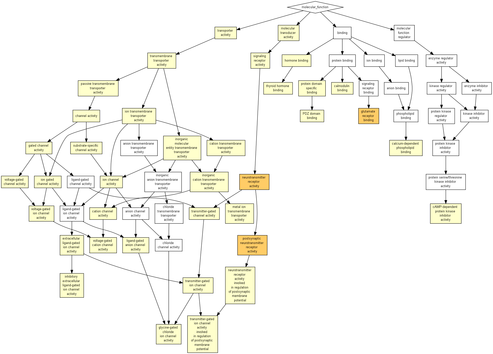

| > 10-3 | 10-3 to 10-5 | 10-5 to 10-7 | 10-7 to 10-9 | < 10-9 |

| GO term | Description | P-value | FDR q-value | Enrichment (N, B, n, b) | Genes |
| GO:0035254 | glutamate receptor binding | 3.34E-7 | 1.5E-3 | 7.13 (16689,66,390,11) |
[+] Show genes
Prnp - prion protein
Akap5 - a kinase (prka) anchor protein 5 Esr1 - estrogen receptor 1 (alpha) Dlg3 - discs, large homolog 3 (drosophila) Homer1 - homer homolog 1 (drosophila) Ptpn5 - protein tyrosine phosphatase, non-receptor type 5 Cacng3 - calcium channel, voltage-dependent, gamma subunit 3 Grin2b - glutamate receptor, ionotropic, nmda2b (epsilon 2) Neto1 - neuropilin (nrp) and tolloid (tll)-like 1 Shisa7 - shisa homolog 7 (xenopus laevis) Gria2 - glutamate receptor, ionotropic, ampa2 (alpha 2) |
| GO:0098960 | postsynaptic neurotransmitter receptor activity | 3.98E-6 | 8.94E-3 | 7.13 (16689,54,390,9) |
[+] Show genes
Gabrb3 - gamma-aminobutyric acid (gaba) a receptor, subunit beta 3
Chrm1 - cholinergic receptor, muscarinic 1, cns Grik5 - glutamate receptor, ionotropic, kainate 5 (gamma 2) Grm5 - glutamate receptor, metabotropic 5 Gabra2 - gamma-aminobutyric acid (gaba) a receptor, subunit alpha 2 Gabra3 - gamma-aminobutyric acid (gaba) a receptor, subunit alpha 3 Grin2b - glutamate receptor, ionotropic, nmda2b (epsilon 2) Glra2 - glycine receptor, alpha 2 subunit Gria2 - glutamate receptor, ionotropic, ampa2 (alpha 2) |
| GO:0030594 | neurotransmitter receptor activity | 7.84E-6 | 1.18E-2 | 5.23 (16689,90,390,11) |
[+] Show genes
Gabrb3 - gamma-aminobutyric acid (gaba) a receptor, subunit beta 3
Chrm1 - cholinergic receptor, muscarinic 1, cns Grik5 - glutamate receptor, ionotropic, kainate 5 (gamma 2) Htr2a - 5-hydroxytryptamine (serotonin) receptor 2a Glra3 - glycine receptor, alpha 3 subunit Grm5 - glutamate receptor, metabotropic 5 Gabra2 - gamma-aminobutyric acid (gaba) a receptor, subunit alpha 2 Gabra3 - gamma-aminobutyric acid (gaba) a receptor, subunit alpha 3 Grin2b - glutamate receptor, ionotropic, nmda2b (epsilon 2) Glra2 - glycine receptor, alpha 2 subunit Gria2 - glutamate receptor, ionotropic, ampa2 (alpha 2) |
| GO:0022839 | ion gated channel activity | 1.25E-5 | 1.4E-2 | 3.01 (16689,284,390,20) |
[+] Show genes
Kcng1 - potassium voltage-gated channel, subfamily g, member 1
Glra3 - glycine receptor, alpha 3 subunit Kcnf1 - potassium voltage-gated channel, subfamily f, member 1 Kcnh3 - potassium voltage-gated channel, subfamily h (eag-related), member 3 Cacna2d1 - calcium channel, voltage-dependent, alpha2/delta subunit 1 Glra2 - glycine receptor, alpha 2 subunit Kcnv1 - potassium channel, subfamily v, member 1 Gria2 - glutamate receptor, ionotropic, ampa2 (alpha 2) Gabrb3 - gamma-aminobutyric acid (gaba) a receptor, subunit beta 3 Kcnj4 - potassium inwardly-rectifying channel, subfamily j, member 4 Cacnb1 - calcium channel, voltage-dependent, beta 1 subunit Grik5 - glutamate receptor, ionotropic, kainate 5 (gamma 2) Scn3a - sodium channel, voltage-gated, type iii, alpha Cacnb3 - calcium channel, voltage-dependent, beta 3 subunit Kcnip2 - kv channel-interacting protein 2 Cacng3 - calcium channel, voltage-dependent, gamma subunit 3 Gabra2 - gamma-aminobutyric acid (gaba) a receptor, subunit alpha 2 Gabra3 - gamma-aminobutyric acid (gaba) a receptor, subunit alpha 3 Grin2b - glutamate receptor, ionotropic, nmda2b (epsilon 2) Scn3b - sodium channel, voltage-gated, type iii, beta |
| GO:0022836 | gated channel activity | 2.27E-5 | 2.05E-2 | 2.89 (16689,296,390,20) |
[+] Show genes
Kcng1 - potassium voltage-gated channel, subfamily g, member 1
Glra3 - glycine receptor, alpha 3 subunit Kcnf1 - potassium voltage-gated channel, subfamily f, member 1 Kcnh3 - potassium voltage-gated channel, subfamily h (eag-related), member 3 Cacna2d1 - calcium channel, voltage-dependent, alpha2/delta subunit 1 Glra2 - glycine receptor, alpha 2 subunit Kcnv1 - potassium channel, subfamily v, member 1 Gria2 - glutamate receptor, ionotropic, ampa2 (alpha 2) Gabrb3 - gamma-aminobutyric acid (gaba) a receptor, subunit beta 3 Kcnj4 - potassium inwardly-rectifying channel, subfamily j, member 4 Cacnb1 - calcium channel, voltage-dependent, beta 1 subunit Grik5 - glutamate receptor, ionotropic, kainate 5 (gamma 2) Scn3a - sodium channel, voltage-gated, type iii, alpha Cacnb3 - calcium channel, voltage-dependent, beta 3 subunit Kcnip2 - kv channel-interacting protein 2 Cacng3 - calcium channel, voltage-dependent, gamma subunit 3 Gabra2 - gamma-aminobutyric acid (gaba) a receptor, subunit alpha 2 Gabra3 - gamma-aminobutyric acid (gaba) a receptor, subunit alpha 3 Grin2b - glutamate receptor, ionotropic, nmda2b (epsilon 2) Scn3b - sodium channel, voltage-gated, type iii, beta |
| GO:0099529 | neurotransmitter receptor activity involved in regulation of postsynaptic membrane potential | 2.53E-5 | 1.9E-2 | 6.58 (16689,52,390,8) |
[+] Show genes
Gabrb3 - gamma-aminobutyric acid (gaba) a receptor, subunit beta 3
Chrm1 - cholinergic receptor, muscarinic 1, cns Grik5 - glutamate receptor, ionotropic, kainate 5 (gamma 2) Gabra2 - gamma-aminobutyric acid (gaba) a receptor, subunit alpha 2 Gabra3 - gamma-aminobutyric acid (gaba) a receptor, subunit alpha 3 Grin2b - glutamate receptor, ionotropic, nmda2b (epsilon 2) Glra2 - glycine receptor, alpha 2 subunit Gria2 - glutamate receptor, ionotropic, ampa2 (alpha 2) |
| GO:0022824 | transmitter-gated ion channel activity | 3.36E-5 | 2.16E-2 | 6.34 (16689,54,390,8) |
[+] Show genes
Gabrb3 - gamma-aminobutyric acid (gaba) a receptor, subunit beta 3
Grik5 - glutamate receptor, ionotropic, kainate 5 (gamma 2) Glra3 - glycine receptor, alpha 3 subunit Gabra2 - gamma-aminobutyric acid (gaba) a receptor, subunit alpha 2 Gabra3 - gamma-aminobutyric acid (gaba) a receptor, subunit alpha 3 Grin2b - glutamate receptor, ionotropic, nmda2b (epsilon 2) Glra2 - glycine receptor, alpha 2 subunit Gria2 - glutamate receptor, ionotropic, ampa2 (alpha 2) |
| GO:0022835 | transmitter-gated channel activity | 3.36E-5 | 1.89E-2 | 6.34 (16689,54,390,8) |
[+] Show genes
Gabrb3 - gamma-aminobutyric acid (gaba) a receptor, subunit beta 3
Grik5 - glutamate receptor, ionotropic, kainate 5 (gamma 2) Glra3 - glycine receptor, alpha 3 subunit Gabra2 - gamma-aminobutyric acid (gaba) a receptor, subunit alpha 2 Gabra3 - gamma-aminobutyric acid (gaba) a receptor, subunit alpha 3 Grin2b - glutamate receptor, ionotropic, nmda2b (epsilon 2) Glra2 - glycine receptor, alpha 2 subunit Gria2 - glutamate receptor, ionotropic, ampa2 (alpha 2) |
| GO:0019904 | protein domain specific binding | 3.5E-5 | 1.75E-2 | 2.03 (16689,779,390,37) |
[+] Show genes
Abi2 - abl-interactor 2
Lin7b - lin-7 homolog b (c. elegans) Snca - synuclein, alpha Actn1 - actinin, alpha 1 Cadm1 - cell adhesion molecule 1 Khdrbs3 - kh domain containing, rna binding, signal transduction associated 3 Ywhab - tyrosine 3-monooxygenase/tryptophan 5-monooxygenase activation protein, beta polypeptide Gria2 - glutamate receptor, ionotropic, ampa2 (alpha 2) Atp2b4 - atpase, ca++ transporting, plasma membrane 4 Hpcal4 - hippocalcin-like 4 Akap5 - a kinase (prka) anchor protein 5 Nlgn1 - neuroligin 1 Dynll1 - dynein light chain lc8-type 1 Prkce - protein kinase c, epsilon Cacng3 - calcium channel, voltage-dependent, gamma subunit 3 Ppp1r9a - protein phosphatase 1, regulatory (inhibitor) subunit 9a Synj1 - synaptojanin 1 Arhgap1 - rho gtpase activating protein 1 Thra - thyroid hormone receptor alpha Pde2a - phosphodiesterase 2a, cgmp-stimulated Syngr3 - synaptogyrin 3 Dlg3 - discs, large homolog 3 (drosophila) Mef2c - myocyte enhancer factor 2c Erc2 - elks/rab6-interacting/cast family member 2 Pak3 - p21 protein (cdc42/rac)-activated kinase 3 Wbp11 - ww domain binding protein 11 Sorbs2 - sorbin and sh3 domain containing 2 Basp1 - brain abundant, membrane attached signal protein 1 Hap1 - huntingtin-associated protein 1 Cacybp - calcyclin binding protein Kcnj4 - potassium inwardly-rectifying channel, subfamily j, member 4 Grik5 - glutamate receptor, ionotropic, kainate 5 (gamma 2) Acvr2a - activin receptor iia Arhgap6 - rho gtpase activating protein 6 Twist2 - twist basic helix-loop-helix transcription factor 2 Prkar2b - protein kinase, camp dependent regulatory, type ii beta Egr2 - early growth response 2 |
| GO:0005216 | ion channel activity | 3.84E-5 | 1.73E-2 | 2.63 (16689,358,390,22) |
[+] Show genes
Kcng1 - potassium voltage-gated channel, subfamily g, member 1
Trpc7 - transient receptor potential cation channel, subfamily c, member 7 Glra3 - glycine receptor, alpha 3 subunit Kcnf1 - potassium voltage-gated channel, subfamily f, member 1 Kcnh3 - potassium voltage-gated channel, subfamily h (eag-related), member 3 Cacna2d1 - calcium channel, voltage-dependent, alpha2/delta subunit 1 Glra2 - glycine receptor, alpha 2 subunit Kcnv1 - potassium channel, subfamily v, member 1 Gria2 - glutamate receptor, ionotropic, ampa2 (alpha 2) Gabrb3 - gamma-aminobutyric acid (gaba) a receptor, subunit beta 3 Gpm6a - glycoprotein m6a Kcnj4 - potassium inwardly-rectifying channel, subfamily j, member 4 Cacnb1 - calcium channel, voltage-dependent, beta 1 subunit Scn3a - sodium channel, voltage-gated, type iii, alpha Grik5 - glutamate receptor, ionotropic, kainate 5 (gamma 2) Cacnb3 - calcium channel, voltage-dependent, beta 3 subunit Kcnip2 - kv channel-interacting protein 2 Cacng3 - calcium channel, voltage-dependent, gamma subunit 3 Gabra2 - gamma-aminobutyric acid (gaba) a receptor, subunit alpha 2 Gabra3 - gamma-aminobutyric acid (gaba) a receptor, subunit alpha 3 Grin2b - glutamate receptor, ionotropic, nmda2b (epsilon 2) Scn3b - sodium channel, voltage-gated, type iii, beta |
| GO:0022838 | substrate-specific channel activity | 5.57E-5 | 2.27E-2 | 2.57 (16689,367,390,22) |
[+] Show genes
Kcng1 - potassium voltage-gated channel, subfamily g, member 1
Trpc7 - transient receptor potential cation channel, subfamily c, member 7 Glra3 - glycine receptor, alpha 3 subunit Kcnf1 - potassium voltage-gated channel, subfamily f, member 1 Kcnh3 - potassium voltage-gated channel, subfamily h (eag-related), member 3 Cacna2d1 - calcium channel, voltage-dependent, alpha2/delta subunit 1 Glra2 - glycine receptor, alpha 2 subunit Kcnv1 - potassium channel, subfamily v, member 1 Gria2 - glutamate receptor, ionotropic, ampa2 (alpha 2) Gabrb3 - gamma-aminobutyric acid (gaba) a receptor, subunit beta 3 Gpm6a - glycoprotein m6a Kcnj4 - potassium inwardly-rectifying channel, subfamily j, member 4 Cacnb1 - calcium channel, voltage-dependent, beta 1 subunit Scn3a - sodium channel, voltage-gated, type iii, alpha Grik5 - glutamate receptor, ionotropic, kainate 5 (gamma 2) Cacnb3 - calcium channel, voltage-dependent, beta 3 subunit Kcnip2 - kv channel-interacting protein 2 Cacng3 - calcium channel, voltage-dependent, gamma subunit 3 Gabra2 - gamma-aminobutyric acid (gaba) a receptor, subunit alpha 2 Gabra3 - gamma-aminobutyric acid (gaba) a receptor, subunit alpha 3 Grin2b - glutamate receptor, ionotropic, nmda2b (epsilon 2) Scn3b - sodium channel, voltage-gated, type iii, beta |
| GO:0060089 | molecular transducer activity | 5.57E-5 | 2.09E-2 | 1.91 (16689,920,390,41) |
[+] Show genes
Prnp - prion protein
Slc22a17 - solute carrier family 22 (organic cation transporter), member 17 Trhr - thyrotropin releasing hormone receptor Cdkl2 - cyclin-dependent kinase-like 2 (cdc2-related kinase) Mas1 - mas1 oncogene Cdk17 - cyclin-dependent kinase 17 Gria2 - glutamate receptor, ionotropic, ampa2 (alpha 2) Gabrb3 - gamma-aminobutyric acid (gaba) a receptor, subunit beta 3 Gpr27 - g protein-coupled receptor 27 Prkacb - protein kinase, camp dependent, catalytic, beta Plxna2 - plexin a2 Nlgn1 - neuroligin 1 Nr2f2 - nuclear receptor subfamily 2, group f, member 2 Oxtr - oxytocin receptor Ltk - leukocyte tyrosine kinase Gabra2 - gamma-aminobutyric acid (gaba) a receptor, subunit alpha 2 Gpr39 - g protein-coupled receptor 39 Gabra3 - gamma-aminobutyric acid (gaba) a receptor, subunit alpha 3 Gpr26 - g protein-coupled receptor 26 Thrb - thyroid hormone receptor beta Thra - thyroid hormone receptor alpha Cdkl4 - cyclin-dependent kinase-like 4 Chrm1 - cholinergic receptor, muscarinic 1, cns Unc5a - unc-5 homolog a (c. elegans) Htr2a - 5-hydroxytryptamine (serotonin) receptor 2a Npy2r - neuropeptide y receptor y2 Unc5d - unc-5 homolog d (c. elegans) Glra3 - glycine receptor, alpha 3 subunit Gpr101 - g protein-coupled receptor 101 Glra2 - glycine receptor, alpha 2 subunit Mchr1 - melanin-concentrating hormone receptor 1 Gpr83 - g protein-coupled receptor 83 Esr1 - estrogen receptor 1 (alpha) Plxnc1 - plexin c1 Grik5 - glutamate receptor, ionotropic, kainate 5 (gamma 2) Acvr2a - activin receptor iia Grm5 - glutamate receptor, metabotropic 5 Grin2b - glutamate receptor, ionotropic, nmda2b (epsilon 2) Nptxr - neuronal pentraxin receptor Gpr1 - g protein-coupled receptor 1 Rxrg - retinoid x receptor gamma |
| GO:0015318 | inorganic molecular entity transmembrane transporter activity | 6.61E-5 | 2.28E-2 | 2.04 (16689,712,390,34) |
[+] Show genes
Slc25a14 - solute carrier family 25 (mitochondrial carrier, brain), member 14
Kcng1 - potassium voltage-gated channel, subfamily g, member 1 Slc7a14 - solute carrier family 7 (cationic amino acid transporter, y+ system), member 14 Atp2b4 - atpase, ca++ transporting, plasma membrane 4 Gria2 - glutamate receptor, ionotropic, ampa2 (alpha 2) Gabrb3 - gamma-aminobutyric acid (gaba) a receptor, subunit beta 3 Slc8a1 - solute carrier family 8 (sodium/calcium exchanger), member 1 Slc7a4 - solute carrier family 7 (cationic amino acid transporter, y+ system), member 4 Slc30a3 - solute carrier family 30 (zinc transporter), member 3 Cacng3 - calcium channel, voltage-dependent, gamma subunit 3 Gabra2 - gamma-aminobutyric acid (gaba) a receptor, subunit alpha 2 Gabra3 - gamma-aminobutyric acid (gaba) a receptor, subunit alpha 3 Slc39a10 - solute carrier family 39 (zinc transporter), member 10 Atp6v1d - atpase, h+ transporting, lysosomal v1 subunit d Trpc7 - transient receptor potential cation channel, subfamily c, member 7 Glra3 - glycine receptor, alpha 3 subunit Kcnf1 - potassium voltage-gated channel, subfamily f, member 1 Kcnh3 - potassium voltage-gated channel, subfamily h (eag-related), member 3 Cacna2d1 - calcium channel, voltage-dependent, alpha2/delta subunit 1 Glra2 - glycine receptor, alpha 2 subunit Kcnv1 - potassium channel, subfamily v, member 1 Atp6v1c2 - atpase, h+ transporting, lysosomal v1 subunit c2 Gpm6a - glycoprotein m6a Tusc3 - tumor suppressor candidate 3 Kcnj4 - potassium inwardly-rectifying channel, subfamily j, member 4 Scn3a - sodium channel, voltage-gated, type iii, alpha Grik5 - glutamate receptor, ionotropic, kainate 5 (gamma 2) Cacnb1 - calcium channel, voltage-dependent, beta 1 subunit Atp6v1a - atpase, h+ transporting, lysosomal v1 subunit a Cacnb3 - calcium channel, voltage-dependent, beta 3 subunit Kcnip2 - kv channel-interacting protein 2 Atp6v0c - atpase, h+ transporting, lysosomal v0 subunit c Grin2b - glutamate receptor, ionotropic, nmda2b (epsilon 2) Scn3b - sodium channel, voltage-gated, type iii, beta |
| GO:0030165 | PDZ domain binding | 6.79E-5 | 2.18E-2 | 4.17 (16689,113,390,11) |
[+] Show genes
Kcnj4 - potassium inwardly-rectifying channel, subfamily j, member 4
Grik5 - glutamate receptor, ionotropic, kainate 5 (gamma 2) Acvr2a - activin receptor iia Nlgn1 - neuroligin 1 Dlg3 - discs, large homolog 3 (drosophila) Lin7b - lin-7 homolog b (c. elegans) Cacng3 - calcium channel, voltage-dependent, gamma subunit 3 Erc2 - elks/rab6-interacting/cast family member 2 Cadm1 - cell adhesion molecule 1 Gria2 - glutamate receptor, ionotropic, ampa2 (alpha 2) Atp2b4 - atpase, ca++ transporting, plasma membrane 4 |
| GO:0099095 | ligand-gated anion channel activity | 7.88E-5 | 2.36E-2 | 10.70 (16689,20,390,5) |
[+] Show genes
Gabrb3 - gamma-aminobutyric acid (gaba) a receptor, subunit beta 3
Glra3 - glycine receptor, alpha 3 subunit Gabra2 - gamma-aminobutyric acid (gaba) a receptor, subunit alpha 2 Gabra3 - gamma-aminobutyric acid (gaba) a receptor, subunit alpha 3 Glra2 - glycine receptor, alpha 2 subunit |
| GO:0005230 | extracellular ligand-gated ion channel activity | 1.17E-4 | 3.28E-2 | 5.35 (16689,64,390,8) |
[+] Show genes
Gabrb3 - gamma-aminobutyric acid (gaba) a receptor, subunit beta 3
Grik5 - glutamate receptor, ionotropic, kainate 5 (gamma 2) Glra3 - glycine receptor, alpha 3 subunit Gabra2 - gamma-aminobutyric acid (gaba) a receptor, subunit alpha 2 Gabra3 - gamma-aminobutyric acid (gaba) a receptor, subunit alpha 3 Grin2b - glutamate receptor, ionotropic, nmda2b (epsilon 2) Glra2 - glycine receptor, alpha 2 subunit Gria2 - glutamate receptor, ionotropic, ampa2 (alpha 2) |
| GO:1904315 | transmitter-gated ion channel activity involved in regulation of postsynaptic membrane potential | 1.33E-4 | 3.51E-2 | 6.11 (16689,49,390,7) |
[+] Show genes
Gabrb3 - gamma-aminobutyric acid (gaba) a receptor, subunit beta 3
Grik5 - glutamate receptor, ionotropic, kainate 5 (gamma 2) Gabra2 - gamma-aminobutyric acid (gaba) a receptor, subunit alpha 2 Gabra3 - gamma-aminobutyric acid (gaba) a receptor, subunit alpha 3 Grin2b - glutamate receptor, ionotropic, nmda2b (epsilon 2) Glra2 - glycine receptor, alpha 2 subunit Gria2 - glutamate receptor, ionotropic, ampa2 (alpha 2) |
| GO:0046873 | metal ion transmembrane transporter activity | 1.62E-4 | 4.04E-2 | 2.38 (16689,395,390,22) |
[+] Show genes
Kcng1 - potassium voltage-gated channel, subfamily g, member 1
Trpc7 - transient receptor potential cation channel, subfamily c, member 7 Kcnf1 - potassium voltage-gated channel, subfamily f, member 1 Kcnh3 - potassium voltage-gated channel, subfamily h (eag-related), member 3 Cacna2d1 - calcium channel, voltage-dependent, alpha2/delta subunit 1 Kcnv1 - potassium channel, subfamily v, member 1 Atp2b4 - atpase, ca++ transporting, plasma membrane 4 Gria2 - glutamate receptor, ionotropic, ampa2 (alpha 2) Slc8a1 - solute carrier family 8 (sodium/calcium exchanger), member 1 Gpm6a - glycoprotein m6a Tusc3 - tumor suppressor candidate 3 Kcnj4 - potassium inwardly-rectifying channel, subfamily j, member 4 Scn3a - sodium channel, voltage-gated, type iii, alpha Cacnb1 - calcium channel, voltage-dependent, beta 1 subunit Grik5 - glutamate receptor, ionotropic, kainate 5 (gamma 2) Cacnb3 - calcium channel, voltage-dependent, beta 3 subunit Kcnip2 - kv channel-interacting protein 2 Slc30a3 - solute carrier family 30 (zinc transporter), member 3 Cacng3 - calcium channel, voltage-dependent, gamma subunit 3 Grin2b - glutamate receptor, ionotropic, nmda2b (epsilon 2) Slc39a10 - solute carrier family 39 (zinc transporter), member 10 Scn3b - sodium channel, voltage-gated, type iii, beta |
| GO:0022803 | passive transmembrane transporter activity | 1.93E-4 | 4.57E-2 | 2.35 (16689,400,390,22) |
[+] Show genes
Kcng1 - potassium voltage-gated channel, subfamily g, member 1
Trpc7 - transient receptor potential cation channel, subfamily c, member 7 Glra3 - glycine receptor, alpha 3 subunit Kcnf1 - potassium voltage-gated channel, subfamily f, member 1 Kcnh3 - potassium voltage-gated channel, subfamily h (eag-related), member 3 Cacna2d1 - calcium channel, voltage-dependent, alpha2/delta subunit 1 Kcnv1 - potassium channel, subfamily v, member 1 Glra2 - glycine receptor, alpha 2 subunit Gria2 - glutamate receptor, ionotropic, ampa2 (alpha 2) Gabrb3 - gamma-aminobutyric acid (gaba) a receptor, subunit beta 3 Gpm6a - glycoprotein m6a Kcnj4 - potassium inwardly-rectifying channel, subfamily j, member 4 Scn3a - sodium channel, voltage-gated, type iii, alpha Grik5 - glutamate receptor, ionotropic, kainate 5 (gamma 2) Cacnb1 - calcium channel, voltage-dependent, beta 1 subunit Cacnb3 - calcium channel, voltage-dependent, beta 3 subunit Kcnip2 - kv channel-interacting protein 2 Cacng3 - calcium channel, voltage-dependent, gamma subunit 3 Gabra2 - gamma-aminobutyric acid (gaba) a receptor, subunit alpha 2 Gabra3 - gamma-aminobutyric acid (gaba) a receptor, subunit alpha 3 Grin2b - glutamate receptor, ionotropic, nmda2b (epsilon 2) Scn3b - sodium channel, voltage-gated, type iii, beta |
| GO:0015267 | channel activity | 1.93E-4 | 4.34E-2 | 2.35 (16689,400,390,22) |
[+] Show genes
Kcng1 - potassium voltage-gated channel, subfamily g, member 1
Trpc7 - transient receptor potential cation channel, subfamily c, member 7 Glra3 - glycine receptor, alpha 3 subunit Kcnf1 - potassium voltage-gated channel, subfamily f, member 1 Kcnh3 - potassium voltage-gated channel, subfamily h (eag-related), member 3 Cacna2d1 - calcium channel, voltage-dependent, alpha2/delta subunit 1 Kcnv1 - potassium channel, subfamily v, member 1 Glra2 - glycine receptor, alpha 2 subunit Gria2 - glutamate receptor, ionotropic, ampa2 (alpha 2) Gabrb3 - gamma-aminobutyric acid (gaba) a receptor, subunit beta 3 Gpm6a - glycoprotein m6a Kcnj4 - potassium inwardly-rectifying channel, subfamily j, member 4 Scn3a - sodium channel, voltage-gated, type iii, alpha Grik5 - glutamate receptor, ionotropic, kainate 5 (gamma 2) Cacnb1 - calcium channel, voltage-dependent, beta 1 subunit Cacnb3 - calcium channel, voltage-dependent, beta 3 subunit Kcnip2 - kv channel-interacting protein 2 Cacng3 - calcium channel, voltage-dependent, gamma subunit 3 Gabra2 - gamma-aminobutyric acid (gaba) a receptor, subunit alpha 2 Gabra3 - gamma-aminobutyric acid (gaba) a receptor, subunit alpha 3 Grin2b - glutamate receptor, ionotropic, nmda2b (epsilon 2) Scn3b - sodium channel, voltage-gated, type iii, beta |
| GO:0005544 | calcium-dependent phospholipid binding | 1.95E-4 | 4.17E-2 | 5.76 (16689,52,390,7) |
[+] Show genes
Doc2a - double c2, alpha
Cpne5 - copine v Cpne7 - copine vii Cpne6 - copine vi Syt5 - synaptotagmin v Syt17 - synaptotagmin xvii Esyt3 - extended synaptotagmin-like protein 3 |
| GO:0022890 | inorganic cation transmembrane transporter activity | 2.11E-4 | 4.31E-2 | 2.16 (16689,516,390,26) |
[+] Show genes
Kcng1 - potassium voltage-gated channel, subfamily g, member 1
Gria2 - glutamate receptor, ionotropic, ampa2 (alpha 2) Atp2b4 - atpase, ca++ transporting, plasma membrane 4 Slc8a1 - solute carrier family 8 (sodium/calcium exchanger), member 1 Cacng3 - calcium channel, voltage-dependent, gamma subunit 3 Slc30a3 - solute carrier family 30 (zinc transporter), member 3 Slc39a10 - solute carrier family 39 (zinc transporter), member 10 Atp6v1d - atpase, h+ transporting, lysosomal v1 subunit d Trpc7 - transient receptor potential cation channel, subfamily c, member 7 Kcnf1 - potassium voltage-gated channel, subfamily f, member 1 Kcnh3 - potassium voltage-gated channel, subfamily h (eag-related), member 3 Cacna2d1 - calcium channel, voltage-dependent, alpha2/delta subunit 1 Kcnv1 - potassium channel, subfamily v, member 1 Atp6v1c2 - atpase, h+ transporting, lysosomal v1 subunit c2 Tusc3 - tumor suppressor candidate 3 Gpm6a - glycoprotein m6a Kcnj4 - potassium inwardly-rectifying channel, subfamily j, member 4 Grik5 - glutamate receptor, ionotropic, kainate 5 (gamma 2) Cacnb1 - calcium channel, voltage-dependent, beta 1 subunit Scn3a - sodium channel, voltage-gated, type iii, alpha Atp6v1a - atpase, h+ transporting, lysosomal v1 subunit a Cacnb3 - calcium channel, voltage-dependent, beta 3 subunit Kcnip2 - kv channel-interacting protein 2 Atp6v0c - atpase, h+ transporting, lysosomal v0 subunit c Grin2b - glutamate receptor, ionotropic, nmda2b (epsilon 2) Scn3b - sodium channel, voltage-gated, type iii, beta |
| GO:0022843 | voltage-gated cation channel activity | 2.23E-4 | 4.36E-2 | 3.65 (16689,129,390,11) |
[+] Show genes
Kcnj4 - potassium inwardly-rectifying channel, subfamily j, member 4
Kcng1 - potassium voltage-gated channel, subfamily g, member 1 Cacnb1 - calcium channel, voltage-dependent, beta 1 subunit Cacnb3 - calcium channel, voltage-dependent, beta 3 subunit Kcnip2 - kv channel-interacting protein 2 Cacng3 - calcium channel, voltage-dependent, gamma subunit 3 Kcnf1 - potassium voltage-gated channel, subfamily f, member 1 Kcnh3 - potassium voltage-gated channel, subfamily h (eag-related), member 3 Grin2b - glutamate receptor, ionotropic, nmda2b (epsilon 2) Cacna2d1 - calcium channel, voltage-dependent, alpha2/delta subunit 1 Kcnv1 - potassium channel, subfamily v, member 1 |
| GO:0015075 | ion transmembrane transporter activity | 2.34E-4 | 4.39E-2 | 1.91 (16689,761,390,34) |
[+] Show genes
Slc25a14 - solute carrier family 25 (mitochondrial carrier, brain), member 14
Kcng1 - potassium voltage-gated channel, subfamily g, member 1 Slc7a14 - solute carrier family 7 (cationic amino acid transporter, y+ system), member 14 Atp2b4 - atpase, ca++ transporting, plasma membrane 4 Gria2 - glutamate receptor, ionotropic, ampa2 (alpha 2) Gabrb3 - gamma-aminobutyric acid (gaba) a receptor, subunit beta 3 Slc8a1 - solute carrier family 8 (sodium/calcium exchanger), member 1 Slc7a4 - solute carrier family 7 (cationic amino acid transporter, y+ system), member 4 Slc30a3 - solute carrier family 30 (zinc transporter), member 3 Cacng3 - calcium channel, voltage-dependent, gamma subunit 3 Gabra2 - gamma-aminobutyric acid (gaba) a receptor, subunit alpha 2 Gabra3 - gamma-aminobutyric acid (gaba) a receptor, subunit alpha 3 Slc39a10 - solute carrier family 39 (zinc transporter), member 10 Atp6v1d - atpase, h+ transporting, lysosomal v1 subunit d Trpc7 - transient receptor potential cation channel, subfamily c, member 7 Glra3 - glycine receptor, alpha 3 subunit Kcnf1 - potassium voltage-gated channel, subfamily f, member 1 Kcnh3 - potassium voltage-gated channel, subfamily h (eag-related), member 3 Cacna2d1 - calcium channel, voltage-dependent, alpha2/delta subunit 1 Glra2 - glycine receptor, alpha 2 subunit Kcnv1 - potassium channel, subfamily v, member 1 Atp6v1c2 - atpase, h+ transporting, lysosomal v1 subunit c2 Gpm6a - glycoprotein m6a Tusc3 - tumor suppressor candidate 3 Kcnj4 - potassium inwardly-rectifying channel, subfamily j, member 4 Scn3a - sodium channel, voltage-gated, type iii, alpha Grik5 - glutamate receptor, ionotropic, kainate 5 (gamma 2) Cacnb1 - calcium channel, voltage-dependent, beta 1 subunit Atp6v1a - atpase, h+ transporting, lysosomal v1 subunit a Cacnb3 - calcium channel, voltage-dependent, beta 3 subunit Kcnip2 - kv channel-interacting protein 2 Atp6v0c - atpase, h+ transporting, lysosomal v0 subunit c Grin2b - glutamate receptor, ionotropic, nmda2b (epsilon 2) Scn3b - sodium channel, voltage-gated, type iii, beta |
| GO:0022832 | voltage-gated channel activity | 2.74E-4 | 4.93E-2 | 3.14 (16689,177,390,13) |
[+] Show genes
Kcng1 - potassium voltage-gated channel, subfamily g, member 1
Kcnf1 - potassium voltage-gated channel, subfamily f, member 1 Kcnh3 - potassium voltage-gated channel, subfamily h (eag-related), member 3 Cacna2d1 - calcium channel, voltage-dependent, alpha2/delta subunit 1 Kcnv1 - potassium channel, subfamily v, member 1 Kcnj4 - potassium inwardly-rectifying channel, subfamily j, member 4 Cacnb1 - calcium channel, voltage-dependent, beta 1 subunit Scn3a - sodium channel, voltage-gated, type iii, alpha Cacnb3 - calcium channel, voltage-dependent, beta 3 subunit Kcnip2 - kv channel-interacting protein 2 Cacng3 - calcium channel, voltage-dependent, gamma subunit 3 Grin2b - glutamate receptor, ionotropic, nmda2b (epsilon 2) Scn3b - sodium channel, voltage-gated, type iii, beta |
| GO:0005244 | voltage-gated ion channel activity | 2.74E-4 | 4.74E-2 | 3.14 (16689,177,390,13) |
[+] Show genes
Kcng1 - potassium voltage-gated channel, subfamily g, member 1
Kcnf1 - potassium voltage-gated channel, subfamily f, member 1 Kcnh3 - potassium voltage-gated channel, subfamily h (eag-related), member 3 Cacna2d1 - calcium channel, voltage-dependent, alpha2/delta subunit 1 Kcnv1 - potassium channel, subfamily v, member 1 Kcnj4 - potassium inwardly-rectifying channel, subfamily j, member 4 Cacnb1 - calcium channel, voltage-dependent, beta 1 subunit Scn3a - sodium channel, voltage-gated, type iii, alpha Cacnb3 - calcium channel, voltage-dependent, beta 3 subunit Kcnip2 - kv channel-interacting protein 2 Cacng3 - calcium channel, voltage-dependent, gamma subunit 3 Grin2b - glutamate receptor, ionotropic, nmda2b (epsilon 2) Scn3b - sodium channel, voltage-gated, type iii, beta |
| GO:0005516 | calmodulin binding | 3.4E-4 | 5.67E-2 | 3.07 (16689,181,390,13) |
[+] Show genes
Wfs1 - wolfram syndrome 1 homolog (human)
Rasgrf2 - ras protein-specific guanine nucleotide-releasing factor 2 Camkv - cam kinase-like vesicle-associated Fbxl2 - f-box and leucine-rich repeat protein 2 Atp2b4 - atpase, ca++ transporting, plasma membrane 4 Slc8a1 - solute carrier family 8 (sodium/calcium exchanger), member 1 Akap5 - a kinase (prka) anchor protein 5 Scn3a - sodium channel, voltage-gated, type iii, alpha Pde1a - phosphodiesterase 1a, calmodulin-dependent Myh7 - myosin, heavy polypeptide 7, cardiac muscle, beta Pnck - pregnancy upregulated non-ubiquitously expressed cam kinase Gap43 - growth associated protein 43 Arpp21 - cyclic amp-regulated phosphoprotein, 21 |
| GO:0038023 | signaling receptor activity | 3.97E-4 | 6.37E-2 | 1.80 (16689,879,390,37) |
[+] Show genes
Prnp - prion protein
Slc22a17 - solute carrier family 22 (organic cation transporter), member 17 Trhr - thyrotropin releasing hormone receptor Mas1 - mas1 oncogene Gria2 - glutamate receptor, ionotropic, ampa2 (alpha 2) Gabrb3 - gamma-aminobutyric acid (gaba) a receptor, subunit beta 3 Gpr27 - g protein-coupled receptor 27 Plxna2 - plexin a2 Nlgn1 - neuroligin 1 Nr2f2 - nuclear receptor subfamily 2, group f, member 2 Oxtr - oxytocin receptor Ltk - leukocyte tyrosine kinase Gabra2 - gamma-aminobutyric acid (gaba) a receptor, subunit alpha 2 Gpr39 - g protein-coupled receptor 39 Gabra3 - gamma-aminobutyric acid (gaba) a receptor, subunit alpha 3 Gpr26 - g protein-coupled receptor 26 Thrb - thyroid hormone receptor beta Thra - thyroid hormone receptor alpha Chrm1 - cholinergic receptor, muscarinic 1, cns Unc5a - unc-5 homolog a (c. elegans) Htr2a - 5-hydroxytryptamine (serotonin) receptor 2a Unc5d - unc-5 homolog d (c. elegans) Npy2r - neuropeptide y receptor y2 Glra3 - glycine receptor, alpha 3 subunit Gpr101 - g protein-coupled receptor 101 Glra2 - glycine receptor, alpha 2 subunit Mchr1 - melanin-concentrating hormone receptor 1 Gpr83 - g protein-coupled receptor 83 Esr1 - estrogen receptor 1 (alpha) Grik5 - glutamate receptor, ionotropic, kainate 5 (gamma 2) Acvr2a - activin receptor iia Plxnc1 - plexin c1 Grm5 - glutamate receptor, metabotropic 5 Grin2b - glutamate receptor, ionotropic, nmda2b (epsilon 2) Nptxr - neuronal pentraxin receptor Gpr1 - g protein-coupled receptor 1 Rxrg - retinoid x receptor gamma |
| GO:0005261 | cation channel activity | 4.07E-4 | 6.31E-2 | 2.55 (16689,285,390,17) |
[+] Show genes
Kcng1 - potassium voltage-gated channel, subfamily g, member 1
Trpc7 - transient receptor potential cation channel, subfamily c, member 7 Kcnf1 - potassium voltage-gated channel, subfamily f, member 1 Kcnh3 - potassium voltage-gated channel, subfamily h (eag-related), member 3 Cacna2d1 - calcium channel, voltage-dependent, alpha2/delta subunit 1 Kcnv1 - potassium channel, subfamily v, member 1 Gria2 - glutamate receptor, ionotropic, ampa2 (alpha 2) Gpm6a - glycoprotein m6a Kcnj4 - potassium inwardly-rectifying channel, subfamily j, member 4 Cacnb1 - calcium channel, voltage-dependent, beta 1 subunit Scn3a - sodium channel, voltage-gated, type iii, alpha Grik5 - glutamate receptor, ionotropic, kainate 5 (gamma 2) Cacnb3 - calcium channel, voltage-dependent, beta 3 subunit Kcnip2 - kv channel-interacting protein 2 Cacng3 - calcium channel, voltage-dependent, gamma subunit 3 Grin2b - glutamate receptor, ionotropic, nmda2b (epsilon 2) Scn3b - sodium channel, voltage-gated, type iii, beta |
| GO:0070324 | thyroid hormone binding | 4.13E-4 | 6.19E-2 | 18.34 (16689,7,390,3) |
[+] Show genes
Thrb - thyroid hormone receptor beta
Thra - thyroid hormone receptor alpha Crym - crystallin, mu |
| GO:0005237 | inhibitory extracellular ligand-gated ion channel activity | 4.28E-4 | 6.2E-2 | 10.70 (16689,16,390,4) |
[+] Show genes
Glra3 - glycine receptor, alpha 3 subunit
Gabra2 - gamma-aminobutyric acid (gaba) a receptor, subunit alpha 2 Gabra3 - gamma-aminobutyric acid (gaba) a receptor, subunit alpha 3 Glra2 - glycine receptor, alpha 2 subunit |
| GO:0042562 | hormone binding | 4.42E-4 | 6.21E-2 | 3.97 (16689,97,390,9) |
[+] Show genes
Thrb - thyroid hormone receptor beta
Thra - thyroid hormone receptor alpha Esr1 - estrogen receptor 1 (alpha) Crhbp - corticotropin releasing hormone binding protein Cdh13 - cadherin 13 Oxtr - oxytocin receptor Crym - crystallin, mu C2cd2l - c2 calcium-dependent domain containing 2-like Mchr1 - melanin-concentrating hormone receptor 1 |
| GO:0022857 | transmembrane transporter activity | 4.48E-4 | 6.1E-2 | 1.77 (16689,917,390,38) |
[+] Show genes
Slc22a17 - solute carrier family 22 (organic cation transporter), member 17
Kcng1 - potassium voltage-gated channel, subfamily g, member 1 Slc25a14 - solute carrier family 25 (mitochondrial carrier, brain), member 14 Slc7a14 - solute carrier family 7 (cationic amino acid transporter, y+ system), member 14 Gria2 - glutamate receptor, ionotropic, ampa2 (alpha 2) Atp2b4 - atpase, ca++ transporting, plasma membrane 4 Gabrb3 - gamma-aminobutyric acid (gaba) a receptor, subunit beta 3 Slc8a1 - solute carrier family 8 (sodium/calcium exchanger), member 1 Sec61a2 - sec61, alpha subunit 2 (s. cerevisiae) Slc7a4 - solute carrier family 7 (cationic amino acid transporter, y+ system), member 4 Cacng3 - calcium channel, voltage-dependent, gamma subunit 3 Slc30a3 - solute carrier family 30 (zinc transporter), member 3 Gabra2 - gamma-aminobutyric acid (gaba) a receptor, subunit alpha 2 Gabra3 - gamma-aminobutyric acid (gaba) a receptor, subunit alpha 3 Slc39a10 - solute carrier family 39 (zinc transporter), member 10 Atp6v1d - atpase, h+ transporting, lysosomal v1 subunit d Trpc7 - transient receptor potential cation channel, subfamily c, member 7 Glra3 - glycine receptor, alpha 3 subunit Kcnf1 - potassium voltage-gated channel, subfamily f, member 1 Kcnh3 - potassium voltage-gated channel, subfamily h (eag-related), member 3 Cacna2d1 - calcium channel, voltage-dependent, alpha2/delta subunit 1 Kcnv1 - potassium channel, subfamily v, member 1 Glra2 - glycine receptor, alpha 2 subunit Sv2b - synaptic vesicle glycoprotein 2 b Atp6v1c2 - atpase, h+ transporting, lysosomal v1 subunit c2 Tusc3 - tumor suppressor candidate 3 Gpm6a - glycoprotein m6a Sidt1 - sid1 transmembrane family, member 1 Kcnj4 - potassium inwardly-rectifying channel, subfamily j, member 4 Cacnb1 - calcium channel, voltage-dependent, beta 1 subunit Grik5 - glutamate receptor, ionotropic, kainate 5 (gamma 2) Scn3a - sodium channel, voltage-gated, type iii, alpha Cacnb3 - calcium channel, voltage-dependent, beta 3 subunit Atp6v1a - atpase, h+ transporting, lysosomal v1 subunit a Kcnip2 - kv channel-interacting protein 2 Atp6v0c - atpase, h+ transporting, lysosomal v0 subunit c Grin2b - glutamate receptor, ionotropic, nmda2b (epsilon 2) Scn3b - sodium channel, voltage-gated, type iii, beta |
| GO:0022852 | glycine-gated chloride ion channel activity | 5.45E-4 | 7.2E-2 | 42.79 (16689,2,390,2) |
[+] Show genes
Glra3 - glycine receptor, alpha 3 subunit
Glra2 - glycine receptor, alpha 2 subunit |
| GO:0005215 | transporter activity | 6.24E-4 | 8.01E-2 | 1.71 (16689,999,390,40) |
[+] Show genes
Slc22a17 - solute carrier family 22 (organic cation transporter), member 17
Kcng1 - potassium voltage-gated channel, subfamily g, member 1 Slc25a14 - solute carrier family 25 (mitochondrial carrier, brain), member 14 Slc7a14 - solute carrier family 7 (cationic amino acid transporter, y+ system), member 14 Gria2 - glutamate receptor, ionotropic, ampa2 (alpha 2) Atp2b4 - atpase, ca++ transporting, plasma membrane 4 Gabrb3 - gamma-aminobutyric acid (gaba) a receptor, subunit beta 3 Slc8a1 - solute carrier family 8 (sodium/calcium exchanger), member 1 Sec61a2 - sec61, alpha subunit 2 (s. cerevisiae) Tnfaip8l3 - tumor necrosis factor, alpha-induced protein 8-like 3 Slc7a4 - solute carrier family 7 (cationic amino acid transporter, y+ system), member 4 Cacng3 - calcium channel, voltage-dependent, gamma subunit 3 Slc30a3 - solute carrier family 30 (zinc transporter), member 3 Gabra2 - gamma-aminobutyric acid (gaba) a receptor, subunit alpha 2 Gabra3 - gamma-aminobutyric acid (gaba) a receptor, subunit alpha 3 Slc39a10 - solute carrier family 39 (zinc transporter), member 10 Atp6v1d - atpase, h+ transporting, lysosomal v1 subunit d Trpc7 - transient receptor potential cation channel, subfamily c, member 7 Glra3 - glycine receptor, alpha 3 subunit Kcnf1 - potassium voltage-gated channel, subfamily f, member 1 Kcnh3 - potassium voltage-gated channel, subfamily h (eag-related), member 3 C2cd2l - c2 calcium-dependent domain containing 2-like Cacna2d1 - calcium channel, voltage-dependent, alpha2/delta subunit 1 Kcnv1 - potassium channel, subfamily v, member 1 Glra2 - glycine receptor, alpha 2 subunit Sv2b - synaptic vesicle glycoprotein 2 b Atp6v1c2 - atpase, h+ transporting, lysosomal v1 subunit c2 Tusc3 - tumor suppressor candidate 3 Gpm6a - glycoprotein m6a Sidt1 - sid1 transmembrane family, member 1 Kcnj4 - potassium inwardly-rectifying channel, subfamily j, member 4 Cacnb1 - calcium channel, voltage-dependent, beta 1 subunit Grik5 - glutamate receptor, ionotropic, kainate 5 (gamma 2) Scn3a - sodium channel, voltage-gated, type iii, alpha Cacnb3 - calcium channel, voltage-dependent, beta 3 subunit Atp6v1a - atpase, h+ transporting, lysosomal v1 subunit a Kcnip2 - kv channel-interacting protein 2 Atp6v0c - atpase, h+ transporting, lysosomal v0 subunit c Grin2b - glutamate receptor, ionotropic, nmda2b (epsilon 2) Scn3b - sodium channel, voltage-gated, type iii, beta |
| GO:0004862 | cAMP-dependent protein kinase inhibitor activity | 6.5E-4 | 8.12E-2 | 16.05 (16689,8,390,3) |
[+] Show genes
Pkig - protein kinase inhibitor, gamma
Prkar1b - protein kinase, camp dependent regulatory, type i beta Prkar2b - protein kinase, camp dependent regulatory, type ii beta |
| GO:0008324 | cation transmembrane transporter activity | 8.28E-4 | 1.01E-1 | 1.97 (16689,565,390,26) |
[+] Show genes
Kcng1 - potassium voltage-gated channel, subfamily g, member 1
Gria2 - glutamate receptor, ionotropic, ampa2 (alpha 2) Atp2b4 - atpase, ca++ transporting, plasma membrane 4 Slc8a1 - solute carrier family 8 (sodium/calcium exchanger), member 1 Cacng3 - calcium channel, voltage-dependent, gamma subunit 3 Slc30a3 - solute carrier family 30 (zinc transporter), member 3 Slc39a10 - solute carrier family 39 (zinc transporter), member 10 Atp6v1d - atpase, h+ transporting, lysosomal v1 subunit d Trpc7 - transient receptor potential cation channel, subfamily c, member 7 Kcnf1 - potassium voltage-gated channel, subfamily f, member 1 Kcnh3 - potassium voltage-gated channel, subfamily h (eag-related), member 3 Cacna2d1 - calcium channel, voltage-dependent, alpha2/delta subunit 1 Kcnv1 - potassium channel, subfamily v, member 1 Atp6v1c2 - atpase, h+ transporting, lysosomal v1 subunit c2 Tusc3 - tumor suppressor candidate 3 Gpm6a - glycoprotein m6a Kcnj4 - potassium inwardly-rectifying channel, subfamily j, member 4 Grik5 - glutamate receptor, ionotropic, kainate 5 (gamma 2) Cacnb1 - calcium channel, voltage-dependent, beta 1 subunit Scn3a - sodium channel, voltage-gated, type iii, alpha Atp6v1a - atpase, h+ transporting, lysosomal v1 subunit a Cacnb3 - calcium channel, voltage-dependent, beta 3 subunit Kcnip2 - kv channel-interacting protein 2 Atp6v0c - atpase, h+ transporting, lysosomal v0 subunit c Grin2b - glutamate receptor, ionotropic, nmda2b (epsilon 2) Scn3b - sodium channel, voltage-gated, type iii, beta |
Species used: Mus musculus
The system has recognized 18342 genes out of 21372 gene terms entered by the user.
18342 genes were recognized by gene symbol and 0 genes by other gene IDs .
415 duplicate genes were removed (keeping the highest ranking instance of each gene) leaving a total of 17927 genes.
Only 16689 of these genes are associated with a GO term.
The GOrilla database is periodically updated using the GO database and other sources.
The GOrilla database was last updated on Mar 6, 2021
This results page will be available on this site for one month from now (until Jan 16, 2023 ). You can bookmark this page and come back to it later.